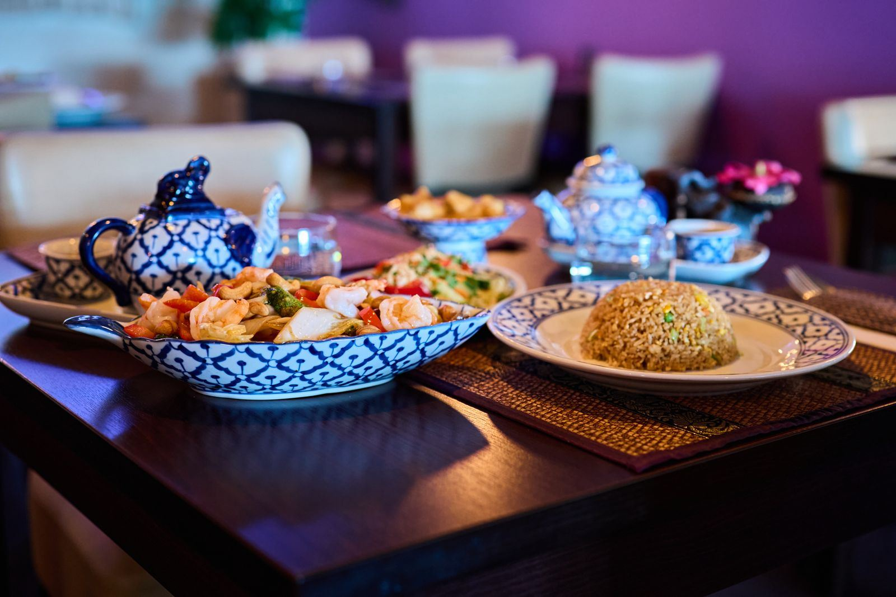
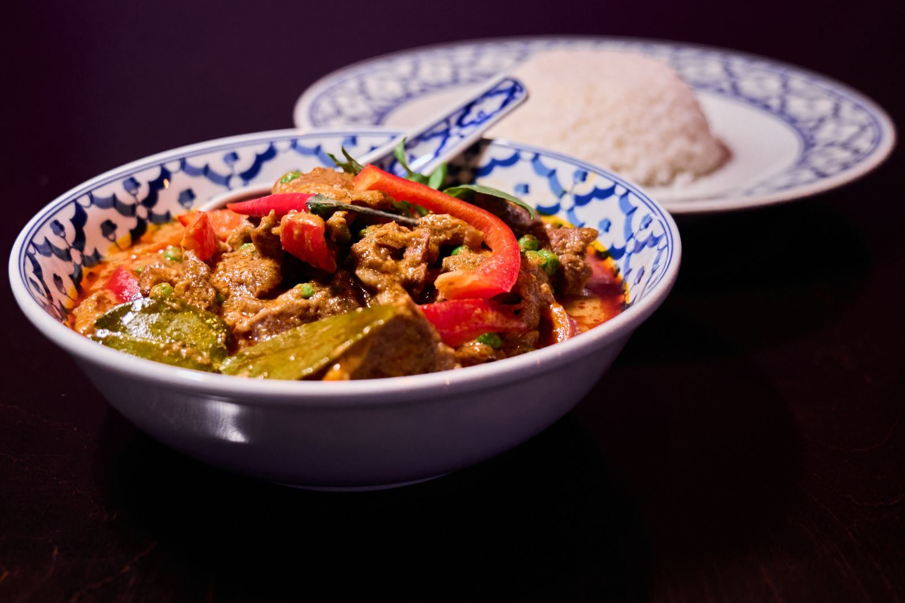
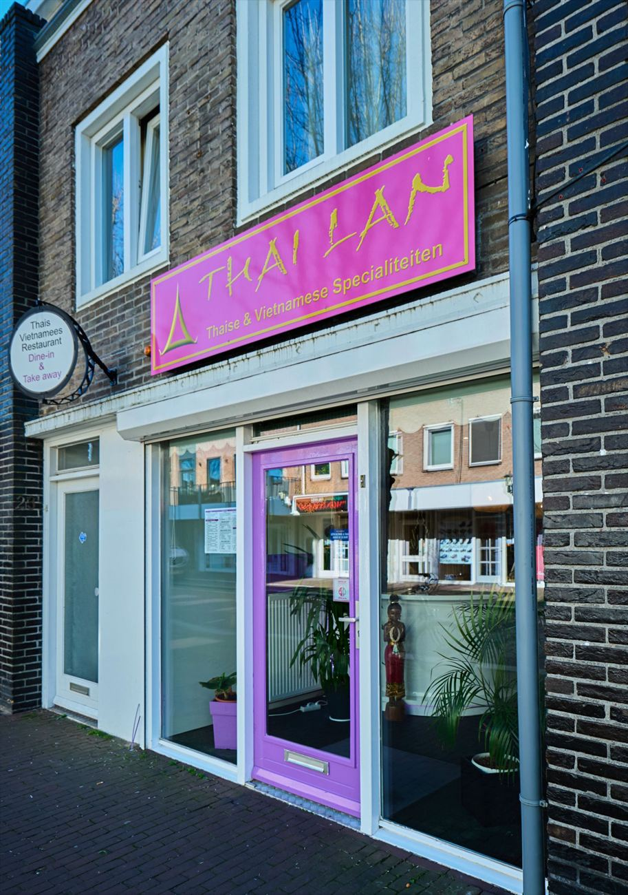
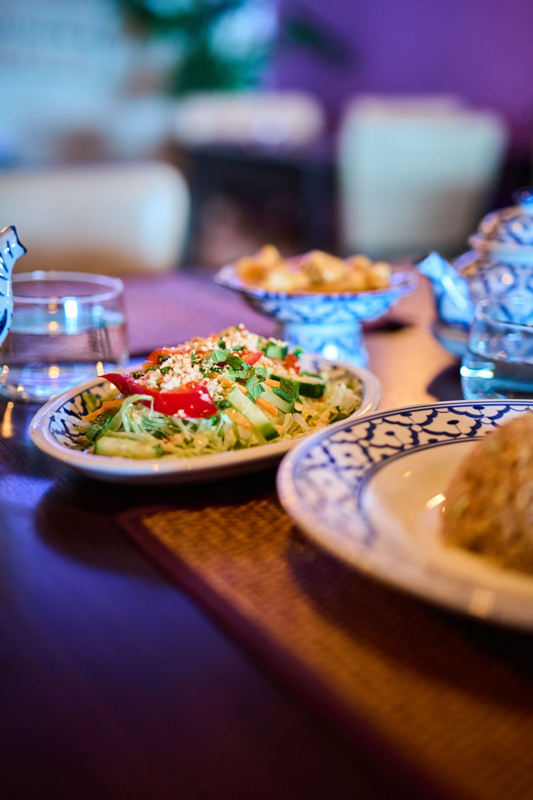

Thai Lan
Thaise en Vietnamese keuken in Oss, dagelijks vers bereid.
Woensdag t/m zondag 16:00 tot 20:30
Welkom bij Thai Lan
Thai Lan is een restaurant dat gerechten serveert uit de Vietnamese en Thaise keuken. Onze gerechten worden dagelijks vers bereid, waardoor de hoge kwaliteit gewaarborgd blijft.
U vindt ons aan de Walstraat 23B in Oss, met 24 zitplaatsen om bij ons te eten. Afhalen kan ook. Thai Lan ligt gunstig, zowel voor de auto als met het openbaar vervoer.
- 24 zitplaatsen
- Afhalen bel of loop binnen
- Catering tot 150 gasten


Afhalen
Bel uw bestelling door of stap even binnen. Wij nemen uw bestelling snel op en bereiden alles vers, zodat u met een warme maaltijd de deur uit gaat.
Telefonisch bereikbaar van 16:00 tot 20:00 tijdens openingstijden.
Bekijk het afhaalmenuCatering
Voor elke gelegenheid een exotische culinaire ervaring.
Bijzondere gelegenheden worden vaak met hapjes gevierd. Thai Lan verzorgt uw catering op locatie, bij uw zaak of thuis, voor maar liefst 150 gasten. We stellen samen met u een passend menu samen.
Bel of mail ons voor een vrijblijvende offerte.

Over ons
Restaurant Thai Lan is in 2014 ontstaan uit een grote familiepassie voor het koken van authentieke Thaise en Vietnamese gerechten. Met veel liefde en toewijding willen wij deze smaken en tradities graag met u delen.
In Nederland zijn de Thaise en Vietnamese keuken nog minder bekend dan bijvoorbeeld de Chinese en Japanse. Daarom is het onze missie om u kennis te laten maken met de rijke smaken en bijzondere gerechten van deze keukens. We hechten veel waarde aan gezonde, verse en smaakvolle maaltijden.
Wij kijken ernaar uit u met een vriendelijke glimlach te verwelkomen.
Sawadee! Team Thai Lan
Reserveren en contact
Reserveer telefonisch of stuur ons een bericht.
Openingstijden
| Woensdag | 16:00 – 20:30 |
|---|---|
| Donderdag | 16:00 – 20:30 |
| Vrijdag | 16:00 – 20:30 |
| Zaterdag | 16:00 – 20:30 |
| Zondag | 16:00 – 20:30 |
- Adres
- Walstraat 23B
5341 CJ Oss - Telefoon
- 0412 486 214
- info@thailan.nl